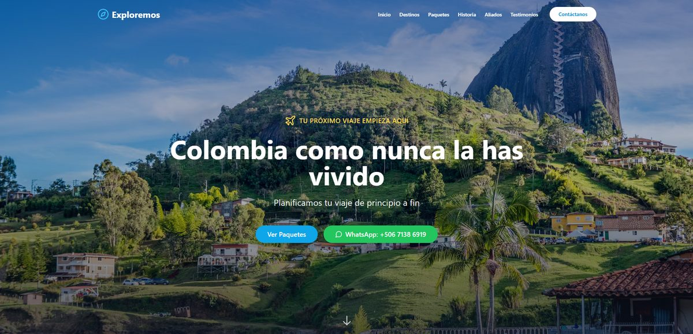

Sistemas de gestión
Inventario, facturación, clientes y órdenes de trabajo en un solo sistema hecho para tu operación.
Empresas
Pymes
Multisucursal
Software · Apps · Automatización · Web — Costa Rica
Desarrollamos software a medida, aplicaciones, automatización con IA y páginas web para empresas en Costa Rica. Construimos la herramienta que tu operación necesita — no la que te toca aguantar.
— Qué hacemos
Desde el sistema interno que ordena tu operación hasta el sitio que ven tus clientes. Si es tecnología y resuelve un problema real, lo construimos.
Inventario, facturación, clientes y órdenes de trabajo en un solo sistema hecho para tu operación.
Aplicaciones para iOS, Android y navegador con login, roles y panel de administración.
Bots de WhatsApp, agentes con IA y procesos automáticos que eliminan el trabajo repetitivo.
Los números de tu empresa en una pantalla, punto de venta e integración entre los sistemas que ya usás.
El frente que ven tus clientes: landings, sitios corporativos y menús digitales con SEO incluido.
Catálogo, carrito y pagos con PayPal o SINPE — o pedidos directos por WhatsApp, sin comisiones.
— Trabajo real

Agencia de viajes · Costa Rica
Sitio para una agencia de viajes que arma planes a Colombia, Argentina, México y Guatemala desde Costa Rica. Destinos, paquetes y contacto directo, pensado para que la consulta llegue por WhatsApp sin fricción.
Además tenemos demos funcionales de restaurante, barbería, tienda en línea, nail studio y landing page — sitios completos que podés navegar y probar antes de decidir. Los proyectos de software a medida son internos de cada empresa, así que no se publican: en el diagnóstico te mostramos casos y pantallas equivalentes.
— Proceso
Escuchamos tus objetivos, entendemos cómo trabaja tu empresa hoy y definimos el alcance real del proyecto. Sin costo.
Te entregamos por escrito qué incluye y qué no, a qué precio. Ves las pantallas y las corregís antes de que se programe nada.
Construimos con código limpio y por entregas: vas usando y probando el sistema o el sitio mientras se arma.
Lanzamos, capacitamos a tu equipo y acompañamos el arranque. Después seguimos con mantenimiento y mejoras.
— Para tu empresa
Ya sea que tengas una empresa grande, una pyme o un emprendimiento recién arrancando — construimos lo que tu operación necesita: el sistema que ordena la casa por dentro y la presencia digital que trae clientes por fuera.
Empresas
y pymes
Producción
y logística
Clínicas
y salud
Retail
y comercio
Restaurantes
y comercios locales
Startups
y emprendedores
— Preguntas frecuentes
Stackbit (también conocido como StackbitCR o Stackbit Costa Rica) es un estudio de software y tecnología con sede en Costa Rica. Desarrollamos software a medida para empresas — sistemas de gestión, aplicaciones móviles y web, automatización con inteligencia artificial, dashboards e integraciones — y también páginas web profesionales y tiendas en línea. Nos encontrás en stackbitcr.com y por WhatsApp al +506 7284-9920.
Sí, es nuestra línea principal. Construimos sistemas de gestión (inventarios, facturación, clientes, órdenes de trabajo, planillas), apps móviles y web, automatización con IA, dashboards de datos, integraciones y puntos de venta. El sistema se construye alrededor de cómo ya opera tu empresa. Empezamos con un diagnóstico sin costo.
Un sistema enlatado te obliga a cambiar tu forma de trabajar para encajar en el programa. El software a medida hace lo contrario. No pagás módulos que nunca vas a usar, no hay licencias por usuario que suben cada año, las funciones propias de tu negocio sí se pueden hacer — y el código queda a nombre de tu empresa.
Sí, pero solo donde hay un resultado medible. Los casos más comunes: atender y clasificar consultas de WhatsApp 24/7, leer facturas y documentos para extraer los datos sin digitarlos, generar reportes automáticamente y responder preguntas sobre la información interna de la empresa. No metemos IA donde una automatización simple resuelve mejor.
Contala. Plataformas, marketplaces, productos digitales, prototipos para levantar inversión, herramientas internas raras — si es software, se puede evaluar. En el diagnóstico te decimos con franqueza si es viable, cuál sería el arranque mínimo y qué nos parece riesgoso.
Es muy sencillo con Stackbit: 1) Nos escribís por WhatsApp o llenás el formulario de contacto. 2) Nos contás tu empresa, tus servicios y qué querés que haga tu sitio. 3) Te enviamos una propuesta sin costo en menos de 24 horas. 4) Aprobás el diseño y en el plazo acordado tu empresa ya tiene página web profesional en línea.
No manejamos precios de lista, porque ningún negocio necesita exactamente lo mismo. El costo depende del tipo de sitio, de las funcionalidades que necesités y del plazo. Contanos qué querés lograr y en menos de 24 horas tenés una cotización a medida, sin costo ni compromiso.
Antes de programar nada te mostramos la propuesta visual, con 2 rondas de revisión incluidas hasta que estés conforme. Después de la entrega tenés 1 ronda de ajustes sin costo durante los primeros 30 días. Nunca vas a recibir un sitio que veas por primera vez el día del lanzamiento.
El plazo se define al inicio de cada proyecto según su alcance y complejidad. Antes de empezar te decimos exactamente cuándo estará lista tu web. El plazo comienza cuando recibimos tu información (logo, textos, fotos).
Diseñamos 100% a medida desde cero. No usamos plantillas genéricas de WordPress ni Wix. Cada sitio refleja la identidad única de tu negocio y carga más rápido que cualquier plantilla.
Sí. Diseñamos páginas web para restaurantes en Costa Rica con menú digital, galería de platos, horarios, mapa de ubicación y botón de pedidos por WhatsApp. El cliente ve tu menú, elige y te escribe directo — sin llamadas ni comisiones.
Sí. Creamos páginas web para barberías, salones de belleza, spas y estéticas en Costa Rica. Incluyen galería de trabajos, lista de servicios con precios, agenda en línea y contacto por WhatsApp.
Sí. Todas las páginas web que desarrollamos en Costa Rica son 100% responsive y mobile-first. Se ven y funcionan perfectamente en celular, tablet y escritorio, y cargan en menos de 2 segundos.
Sí. Atendemos clientes en todo Costa Rica — San José, Alajuela, Cartago, Heredia, Guanacaste, Puntarenas y Limón. También trabajamos con clientes en México, Guatemala, Colombia, España y Estados Unidos. Todo el proceso es remoto y sin complicaciones.
Hosting seguro, dominio renovado, certificado SSL activo, copias de seguridad diarias, monitoreo de disponibilidad 24/7, actualizaciones de seguridad y cambios menores de contenido sin costo extra.
Contanos qué necesitás — un sistema, una app, una automatización o tu sitio web — y te respondemos en menos de 24 horas. Sin costo ni compromiso.
Atiende Aarón López — desarrollador y fundador de Stackbit, desde San José, Costa Rica. Hablás directamente con quien construye tu proyecto.